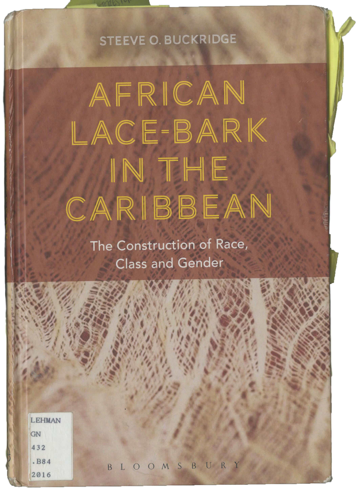
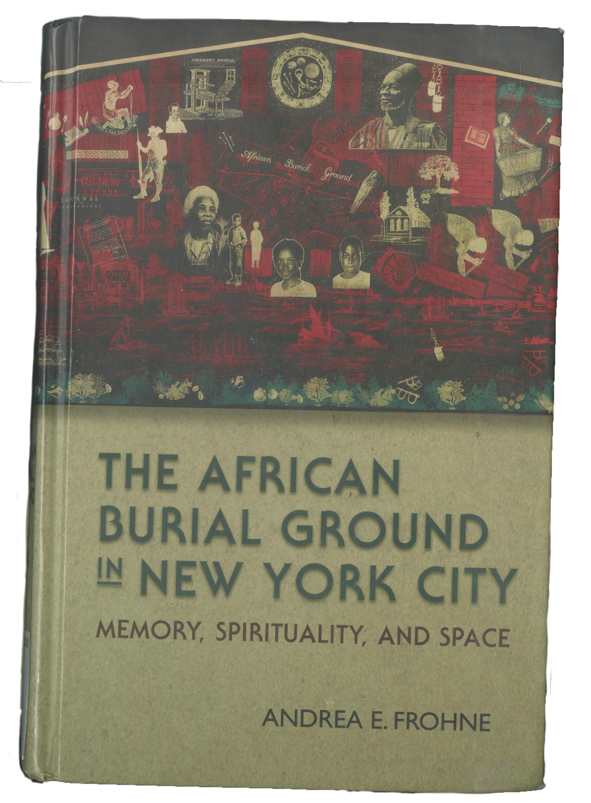
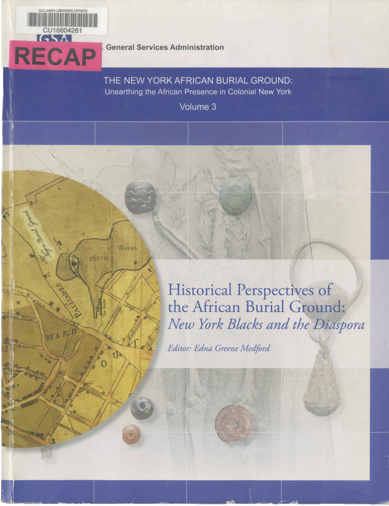
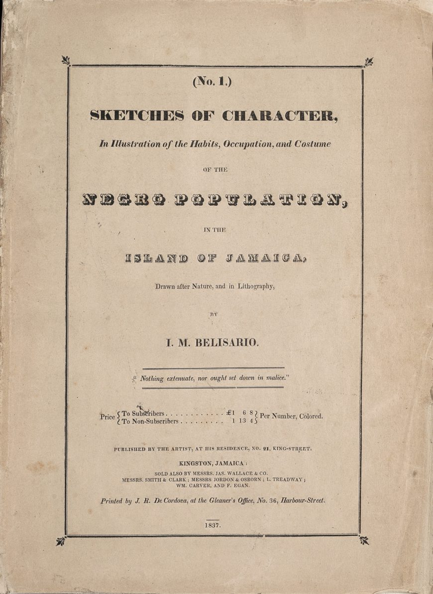

African Lace Bark in the Caribbean The Construction of Race, Class, and Gender
The Language of Dress: Resistance and Accommodation in Jamaica, 1760–1890

The African Burial Ground in New York City: Memory, Spirituality, and Space

The New York African Burial Ground: Unearthing the African Presence in Colonial New York, Volume 3: Historical Perspectives of the African Burial Ground: New York Blacks and the Diaspora
Materialities of Ritual in the Black Atlantic

The Archaeology of the New York African Burial Ground: The Final Report and Papers of the New York African Burial Ground Project. Vol. 2, Part 1

The Skeletal Biology, Archaeology, and History of the New York African Burial Ground: A Synthesis of Volumes 1, 2, and 3
 copy.png)
Flash of the Spirit: African & Afro-American Art & Philosophy

No. 1, Sketches of Character, In Illustration of the Habits, Occupations, and Costume of the Negro Population in the Island of Jamaica, 1837–38